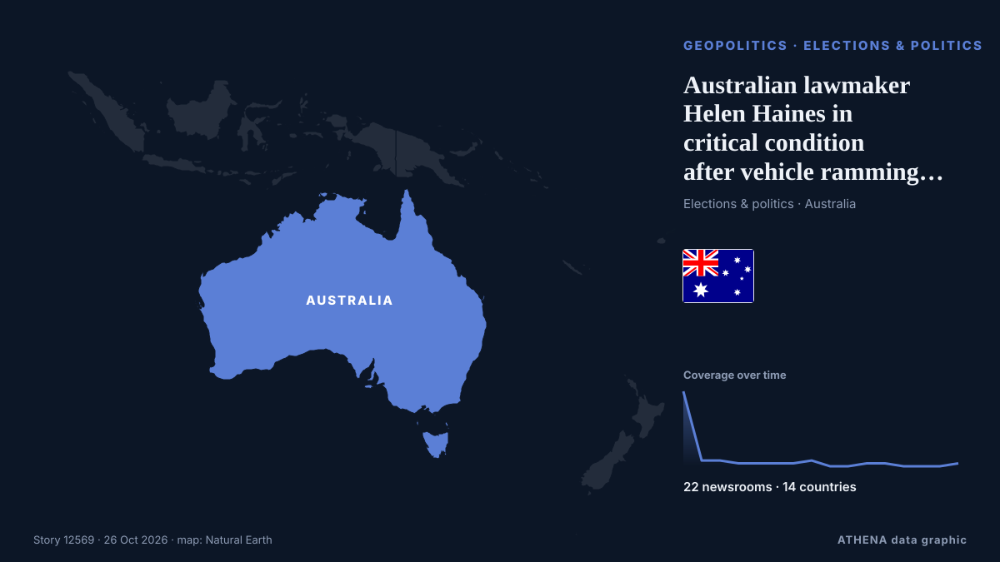

الجغرافيا السياسيةخريطة: Australia، انتخابات. 22 وسيلة إعلام في 14 دولة التغطية: تقارير كل 12 ساعات
الخطر عبر الزمن
Australian lawmaker Helen Haines in critical condition after vehicle ramming attack

Australian MP Helen Haines was critically injured after being struck by a car outside her office. من The Jerusalem Post
باختصار
نشرته بشكل مستقل 22 مصدرًا في 14 دولة منذ 19 أكتوبر، وأول من نشره ABC News Australia؛ والتغطية تتراجع. يقدّر ATHENA الخطر بأنه مرتفع (6.1/10)، ويعود ذلك أساسًا إلى خطورة الضرر الموصوف ونطاقه الجغرافي والقطاعي. الثقة 87٪ (مرتفعة)، وعدد المصادر المستقلة المؤكِّدة: 22، بمتوسط موثوقية للمصادر يبلغ 76٪.
لماذا يهم: قد تغيّر التطورات الأمنية والدبلوماسية التحالفات والتجارة والأسواق إلى ما هو أبعد بكثير من الدول المعنية مباشرة.
ما الذي تغيّر: تقرير جديد واحد خلال 24 ساعة حتى 26 أكتوبر.
تُعرض العناوين بالإنجليزية كما نُشرت.
نظرة سريعة
6.5الأهمية
6.1الخطر · مرتفع
87%الثقة
اختير وقُيِّم وكُتب وفق منهجية ATHENA المنشورة. لا يتدخل أي محرر في الأحداث بعينها. كيف يُنتَج ›
| 19 Oct 07:06 UTC | 26 |
|---|---|
| 19 Oct 19:06 UTC | 2 |
| 20 Oct 07:06 UTC | 2 |
| 20 Oct 19:06 UTC | 1 |
| 21 Oct 07:06 UTC | 1 |
| 21 Oct 19:06 UTC | 1 |
| 22 Oct 07:06 UTC | 1 |
| 22 Oct 19:06 UTC | 2 |
| 23 Oct 07:06 UTC | 0 |
| 23 Oct 19:06 UTC | 0 |
| 24 Oct 07:06 UTC | 1 |
| 24 Oct 19:06 UTC | 1 |
| 25 Oct 07:06 UTC | 0 |
| 25 Oct 19:06 UTC | 0 |
| 26 Oct 07:06 UTC | 0 |
| 26 Oct 19:06 UTC | 1 |
| 19 Oct 15:50 UTC | 6.2 |
|---|---|
| 19 Oct 15:51 UTC | 6.8 |
| 19 Oct 18:58 UTC | 6.2 |
| 26 Oct 20:06 UTC | 6.1 |
لماذا هذه الأرقام
الأهمية
الامتداد — الدول التي تغطيه
الاتساع — وسائل إعلام مختلفة
الجِدّة
قوائم المتابعة
تقاطع الفئات
الخطر
خطورة الضرر الموصوف
الامتداد — الدول التي تغطيه
جودة الأدلة
التداعيات المتسلسلة
الإلحاح
الثقة
وسائل إعلام مستقلة
موثوقية المصادر
الدول
الاستقرار
اتساق التصنيف
التغطية — من نشر الخبر ومتى
العنوان كما نُشر · يفتح الأصل- ABC News Australia · أستراليا · Australia'This wasn't an accident': Helen Haines hit by car outside electorate office
- ABC News Australia · أستراليا · AustraliaIndi MP Helen Haines critically injured after 'attack' at electorate office — as it happened
- SBS News · أستراليا · AustraliaPM says suspect in custody after MP Helen Haines allegedly 'attacked' outside office
- Greek City Times · اليونان · GreeceIndependent MP Helen Haines critically injured after being struck by vehicle in Wangaratta
- Stuff · نيوزيلندا · New ZealandAustralian MP critical after ‘attack’, counterterror police investigate
- Arab Times · الكويت · KuwaitPolice say a car hit Australian lawmaker, critically injuring her; driver arrested
- RTÉ News · أيرلندا · IrelandAustralian MP Haines critical after vehicle attack
- Euronews English · فرنسا · FranceAustralian MP Helen Haines 'critically' hurt in car ramming attack, officials say
- DW English · ألمانيا · GermanyAustralian MP seriously hurt in suspected car attack
- CBC News · كندا · CanadaAustralian MP Helen Haines in critical condition after deliberate vehicle attack, prime minister says
- The Guardian · المملكة المتحدة · United KingdomPremier ‘deeply appalled’ after Indi MP Haines injured – as it happened
- ABC News Australia · أستراليا · AustraliaWhat we know about the 'attack' on Helen Haines
- The Guardian · المملكة المتحدة · United Kingdom‘Deeply appalled’: politicians condemn alleged attack after independent MP Helen Haines critically injured
- NPR · الولايات المتحدة · United StatesAustralian prime minister says lawmaker critically injured by car is 'no accident'
- PBS NewsHour · الولايات المتحدة · United StatesAustralian lawmaker critically injured by car is 'no accident,' prime minister says
- The New York Times (World) · الولايات المتحدة · United StatesAustralian Lawmaker Helen Haines Injured After Attack, Prime Minister Says
- The Jerusalem Post · إسرائيل · IsraelAustralian lawmaker Helen Haines in critical condition after vehicle ramming attack
- Times of India · الهند · India'Not accident': Australian PM says MP Helen Haines was hit in 'deliberate act'
- ABC News (International) · الولايات المتحدة · United StatesAustralian prime minister says lawmaker critically injured by car is 'no accident'
- Al Jazeera English · قطر · QatarAustralian Member of Parliament critically injured after being hit by a car
- BBC News · المملكة المتحدة · United KingdomAustralian MP critically injured after being hit by car in apparent attack
- The Independent · المملكة المتحدة · United KingdomWho is Helen Haines? Australian MP in critical condition after car attack
- The Independent · المملكة المتحدة · United KingdomAustralian MP in critical condition after ‘attack’ outside office
- Bangkok Post — page reader · تايلاند · ThailandAustralian lawmaker critically hurt in 'deliberate attack'
- BBC News · المملكة المتحدة · United KingdomWarning signs over threats to Australian politicians were rising before MP hit by car
- ABC News Australia · أستراليا · AustraliaLive: Helen Haines remains critical as police investigation continues after 'attack'
- The Guardian · المملكة المتحدة · United KingdomHelen Haines: independent MP in critical condition in Melbourne’s Alfred hospital after being struck by car in Wangaratta – follow updates
- Euronews English · فرنسا · FranceAustralia police say man charged after lawmaker Helen Haines deliberately hit by car
- NBC News (World) · الولايات المتحدة · United StatesLawmaker reportedly loses leg as car ramming stuns Australia
- The New York Times (World) · الولايات المتحدة · United StatesAustralian Lawmaker Helen Haines Remains in Critical Condition After Car Attack
- SBS News · أستراليا · AustraliaCouple that treated Helen Haines reveal injured politician's kind words to them
- The New York Times (World) · الولايات المتحدة · United StatesAustralian Politicians Were Already on Edge Before One of Their Own Was Attacked
- ABC News Australia · أستراليا · AustraliaHelen Haines remains critical, three days after car attack
- ABC News Australia · أستراليا · AustraliaHelen Haines pressed PM on regional health days before car attack
- RNZ National · نيوزيلندا · New ZealandMarama Davidson says attack on Australian MP Helen Haines a chilling warning
- ABC News Australia · أستراليا · AustraliaAustralians light candles for critically injured Helen Haines
- The Independent · المملكة المتحدة · United KingdomAustralian MP Helen Haines no longer in critical condition after alleged attack
- SBS News · أستراليا · AustraliaAFP chief addresses mental health concerns after alleged attack on Helen Haines
- ABC News Australia · أستراليا · AustraliaLive: Department rejects PM's claim golf club grant was to fix sewerage issue